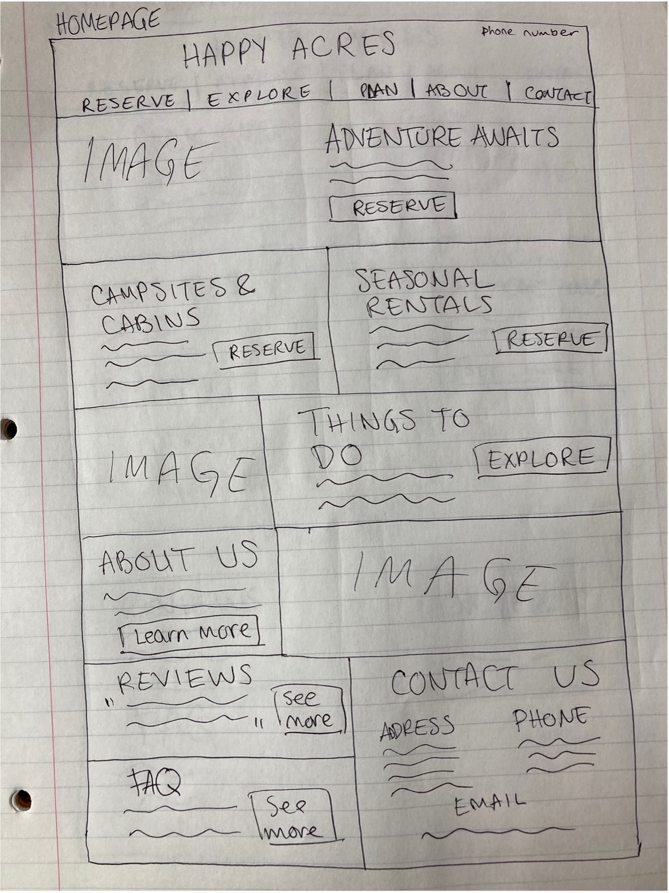
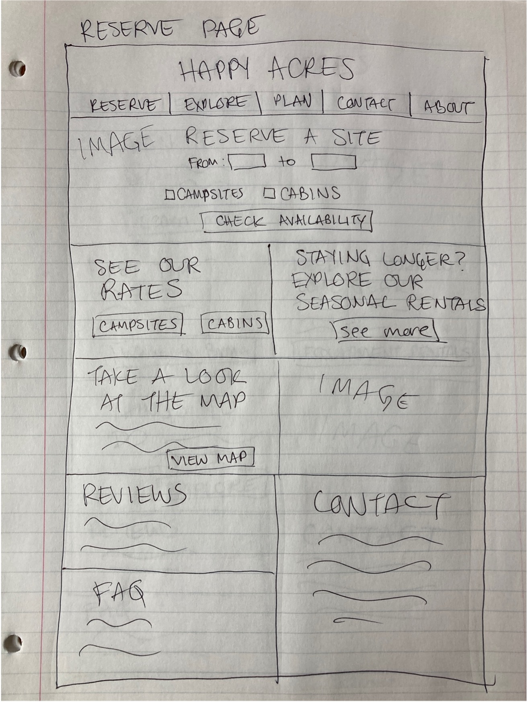
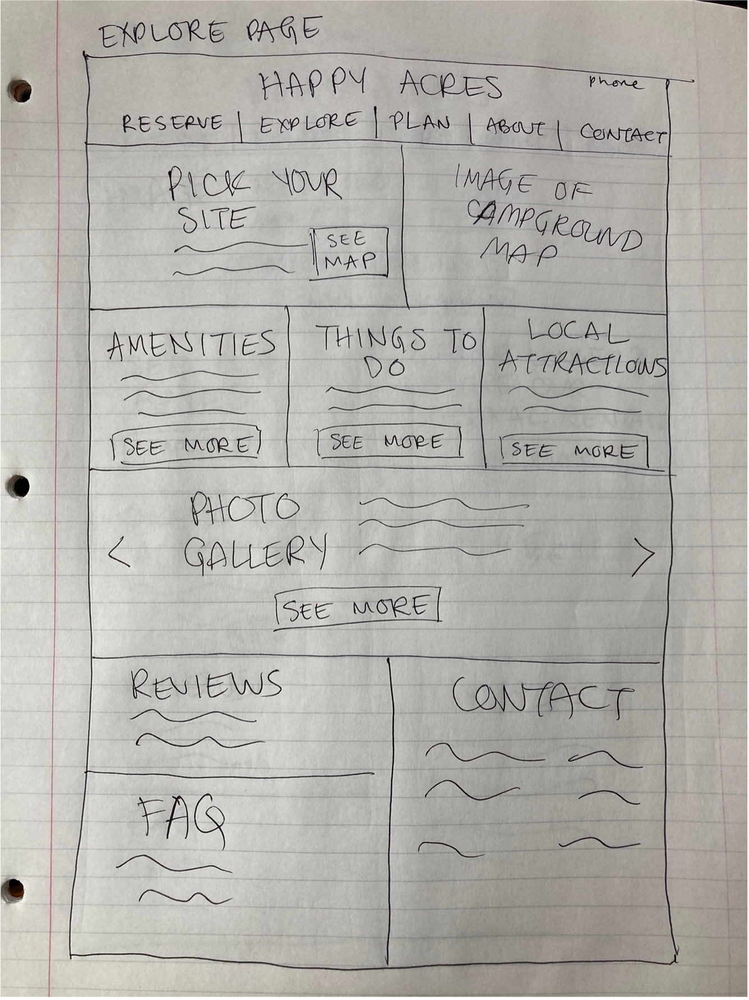
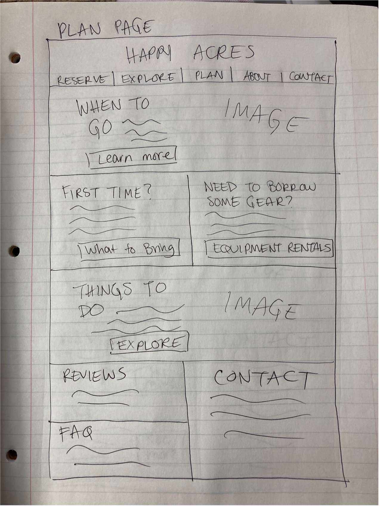
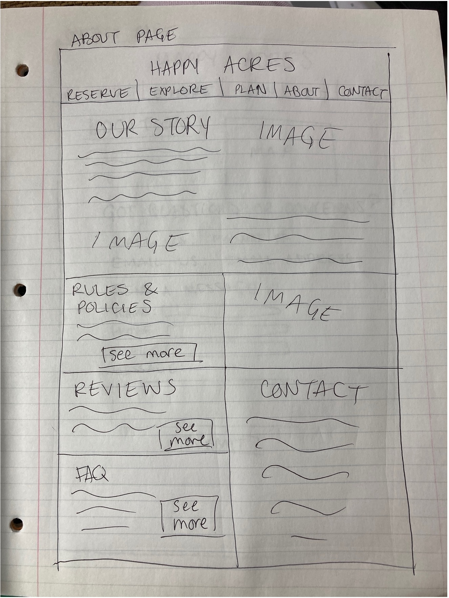
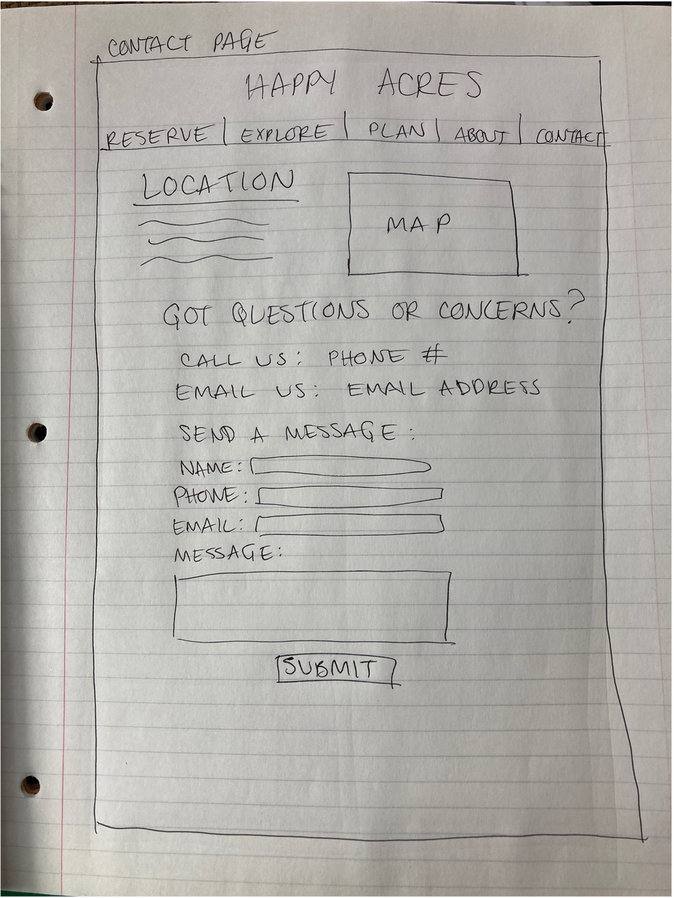

User Personas
User Stories
John Smith | First-time Camper
“As a first-time camper, I want to learn what supplies and equipment are recommended in order to have a positive camping experience."
John is excited to have an outdoor adventure, but he is new to camping and doesn't know how to prepare or what to bring. He could benefit from a packing list or other tips for first-time campers.
John is trying to plan the camping trip, but is getting overwhelmed at the amount of information and research it involves. He wishes someone could just help him through the whole process so it wouldn't be as frustrating.
John would benefit from a page on the campground's website that goes over camping basics for inexperienced people. He needs a basic recommended packing list, a list of gear and supplies he'd be able to rent from the campground, and details about the campground's amenities. He also needs to be able to use an interactive map to choose and reserve a campsite on the company's website.
Jill Brown | Trip Organizer
“As a parent of 2 young kids, I am looking to reserve a campsite that is close to all the campground amenities."
Jill is a highly organized, detail-oriented individual who loves to plan. She is good at taking all possible scenarios into account when planning a trip.
Jill wants to plan a family friendly camping trip with her kids. She wants to be aware of all the details, such as weather, permits, rules, amenities, and so on.
Jill needs to be able to easily locate all the necessary information on the campground's website. The information should be logically organized into separate web pages, and then into chunks that make it easy to scan for relevant info. The website should have an interactive map to make it easier to choose and reserve a campsite.
Steve Jenkins | Laid-back Dad
“As a dad with a full-time job, I want to easily find everything I need online because I don't like busywork and I hate talking on the phone.”
Steve is a divorced dad of two, and when he gets weekends with his kids, he tries to make the time fun and meaningful. Rather than being in control of everything, he prefers to sit back and let the kids explore and try new things.
Steve is looking for a place that's family friendly with a variety of activities to keep everyone entertained. This is the first time he's taking the kids camping and he wants to make it special for them as well as for himself. He wants to try fishing again, which he hasn't done for many years.
Steve isn't looking to spend a lot of time planning the trip, so he needs the website to have logically organized information that is easy to scan. He needs concise sections about amenities and activities, and he would also benefit greatly from a reviews/ratings section. As a highly visual person, Steve would also benefit from high quality photos or videos of the campground as well as an interactive map.
User Flow
Sitemap
Mid Fidelity Wireframes
Homepage
Reserve Page
Explore Page
Plan Page
About Page
Contact Page
Mid Fidelity Wireframes
Homepage

Reserve Page

Explore Page

Plan Page

About Page

Contact Page